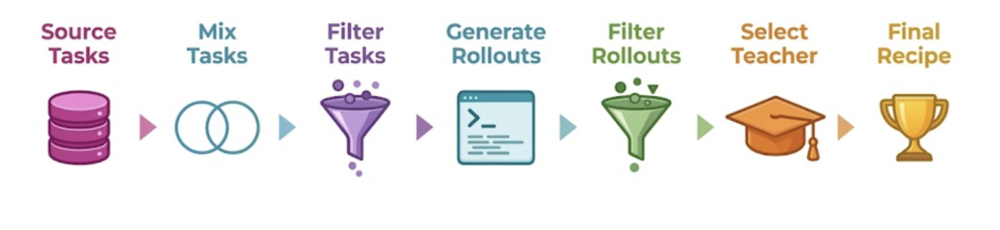
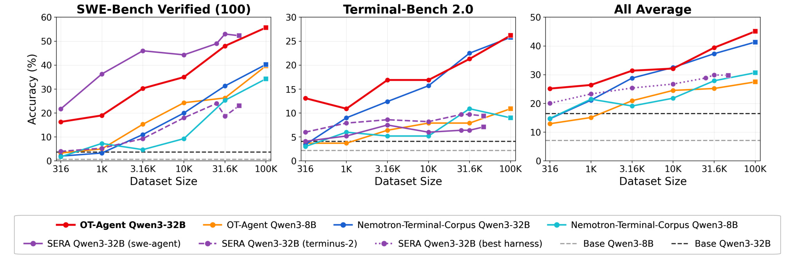
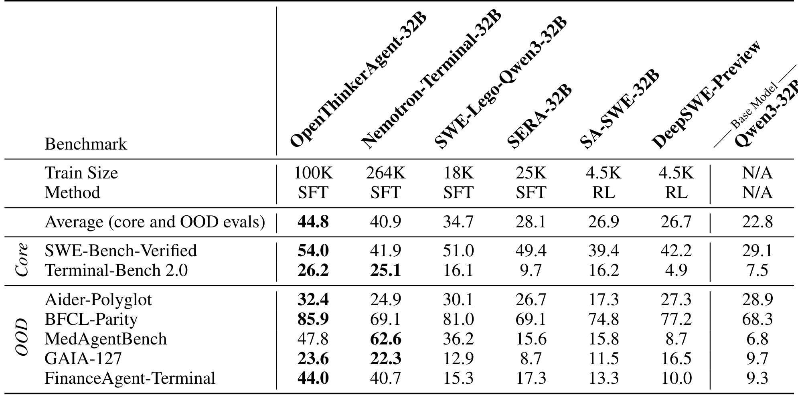
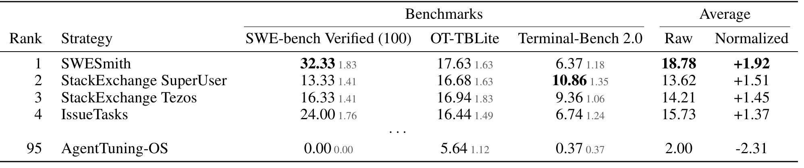

OpenThoughts-Agent：OpenThoughts-Agent：面向 Agentic 模型的数据配方
这篇论文《OpenThoughts-Agent: Data Recipes for Agentic Models》由 Negin Raoof, Richard Zhuang, Marianna Nezhurina, Etash Guha 等 50 位作者 完成，一作主机构口径为 多校 / OpenThoughts 团队。论文入口：arXiv:2606.24855，公开日期为 2026-06-23，主类别为 LLM，次级标签包括 Agent / 数据配方 / 开源训练集 / Qwen3-32B。代码/项目页状态：摘要页给出 openthoughts.ai 项目入口，公开训练集、流水线、实验数据和模型；本轮未深挖仓库完整度。
面向工具调用、深度研究和多任务执行的 agentic 模型，公开训练数据往往只服务单一 benchmark；如果不知道任务来源、多样性、筛选和课程安排各自贡献，开源 Agent 模型就很难稳定泛化到不同执行环境。
1. 背景和问题
它不是又一个 agent benchmark，而是把开源 agent 训练数据的来源、混合、过滤、课程安排和 scaling 行为拆开验证。对推荐系统的 LLM agent、自动分析助手、数据标注 agent 都有迁移价值。 从背景上看，OpenThoughts-Agent 关心的不是单次预测，而是一个更长的系统链条：输入如何被采集，训练信号如何被构造，模型内部状态如何保存，输出又如何反过来影响下一轮数据。这个链条在推荐系统和大模型应用里都很常见。推荐系统有曝光偏差、长尾稀疏、item 表示和用户反馈循环；大模型有提示、工具调用、记忆、检索和自我评估。论文把这些变量显式化后，读者才能判断它解决的是数据问题、结构问题、评估问题还是部署问题。
Agentic language models dramatically expand applications, but public knowledge about curating broadly capable agent training data is limited. OpenThoughts-Agent proposes an open data curation pipeline, runs more than 100 controlled ablations, assembles 100K examples, fine-tunes Qwen3-32B, and reports 44.8% average accuracy across seven agentic benchmarks, 3.9 points above Nemotron-Terminal-32B. 这段摘要信息说明，论文至少给出了问题、方法和实验三层证据。需要保守处理的是，arXiv 新稿的代码、数据和线上口径往往还未完全公开；因此本文把作者报告的数值作为论文事实记录，不把它们等同于独立复现结论。
对推荐工程而言，这篇论文的背景价值在于提醒我们不要只看离线平均分。点击、购买、会话满意度、候选覆盖、解释可信度和系统成本经常互相牵制。对大模型工程而言，agent 训练、记忆维护、幻觉检测和检索增强也会遇到类似问题：模型看似更强，但训练数据、教师信号、工具轨迹或梯度观测可能改变了评估分布。
我把 OpenThoughts-Agent 放进今日精选，是因为它能提供一个可复用的诊断问题：当我们说模型能力提高时，究竟是输入数据更好、训练目标更合适、结构偏置更强、还是评测口径更接近真实任务。只有把这个问题回答清楚，论文才有继续复现和工程转化价值。
进一步看，OpenThoughts-Agent 也和近期论文形成互补。过去几天已有多篇论文关注生成式推荐、agent memory、RAG、长上下文和后训练。今天这篇的新增价值在于它把其中一个环节拆成可检查的实验对象，而不是只提出更大的模型或更复杂的提示。对知识库沉淀来说，这类论文有助于后续做横向对照。
如果后续要复现，第一步不应直接追求作者的最高分，而应复现最小可观测链路：同一数据切分、同一模型规模、同一训练预算、同一评估脚本，先确认指标趋势是否一致。若最小链路都无法对齐，就不应把论文结论写进生产设计。
补充阅读口径：这篇论文还需要放到近期推荐系统与大模型自动化趋势里理解。系统越依赖自动生成的标签、自动维护的记忆、自动执行的工具链或自动评估的 judge，就越容易在数据采样、状态更新和评估口径之间产生偏差。因此，本笔记把论文中的中间变量单独写出，目的是让后续复现可以先检查数据和状态，而不是只追逐最终分数。
再补一层背景判断：如果后续要把这篇论文用于真实系统，最先要确认的不是模型名称，而是论文里的用户、物品、文档、记忆、梯度或评价对象能否映射到本地可记录字段。能映射，才有离线回放和 shadow evaluation 的入口；不能映射，就只能把它当作研究线索。
2. 方法
2.1 数据源分层与任务多样性控制
OpenThoughts-Agent 的第一层方法是把任务重新拆成可控制的数据或状态单元。作者没有只把输入样本送进一个黑箱模型，而是强调 数据源分层与任务多样性控制。这一步的输入是原始任务、用户行为、文档、候选商品或模型输出，输出是更适合训练或评估的结构化信号。真正重要的是信号的来源、难度和噪声被显式记录，而不是简单增加样本量。

Figure 2 是 OpenThoughts-Agent 的方法锚点：作者把 SFT 数据配方拆成 Source Tasks、Mix Tasks、Filter Tasks、Generate Rollouts、Filter Rollouts、Select Teacher 和 Final Recipe 这几步，并强调每一阶段都能被单独消融。读这张图时，不应把它看成普通流程图，而要把它对应到后文的实验设计：任务来源决定候选任务的语义空间，混合策略决定不同来源如何进入同一训练集，任务过滤和 rollout 过滤分别处理“题目质量”和“执行轨迹质量”，teacher 选择则决定轨迹生成的上限和偏差。对推荐系统或内部 agent 训练来说，这张图最有价值的地方是把数据配方从“采更多样本”改写成“逐段记录、逐段消融、逐段定责”的工程链路。
从系统角度看，这一层的作用是降低训练和评估之间的口径差异。推荐系统经常依赖点击日志，但点击会被位置、库存、价格、活动和历史曝光影响；大模型系统经常依赖教师输出或自动评分，但教师也有偏差。OpenThoughts-Agent 把这些信号组织成可审计的中间对象后，后续模块才有可能解释收益来自哪里。
2.2 100 次以上消融驱动的数据配方选择
第二层方法是 100 次以上消融驱动的数据配方选择。这一步通常承担选择、路由、打分或课程安排的角色：它决定哪些样本进入训练，哪些候选进入比较，哪些中间状态被保留，哪些错误被视作需要修正的信号。如果这一层没有清楚定义，最终分数即使提升，也很难知道是模型学到了任务结构，还是只记住了某种数据偏置。
2.3 Qwen3-32B 微调与跨 benchmark 评估
第三层方法是 Qwen3-32B 微调与跨 benchmark 评估。它把前两层产生的结构化信号接到模型训练、推理或评估中，并用实验检查收益是否稳定。对 OpenThoughts-Agent 来说，关键不是“用了 LLM”或“用了推荐模型”，而是模型在什么阶段读取这些信号：训练前的数据构造、训练中的目标函数、推理时的路由，还是评估后的解释。如果信号只在评估阶段使用，却被写成训练能力提升，就会高估方法的可迁移性。
方法部分最值得复现的不是整套系统，而是中间状态。对于 OpenThoughts-Agent，我会优先检查样本分层、状态更新、评分理由、梯度位置或语义代理是否能独立导出；然后才检查最终榜单或平均准确率。这样做可以避免把一个复杂 pipeline 的收益全部归因于最后一个模型。
3. 实验结果
七个 agentic benchmark，报告平均 44.8% 准确率，并与 Nemotron-Terminal-32B 的 40.9% 做对照；还报告训练数据随规模增加的 scaling property。 这些实验结果说明，作者没有只给出单一平均分，而是尝试从任务效果、可靠性、效率或解释性多个角度证明方法价值。不过，本轮没有重新运行训练脚本，也没有核验全部代码，因此报告中的数值只代表论文公开材料。

Figure 1 直接展示 OpenThoughts-Agent-SFT 在 SWE-Bench Verified、Terminal-Bench 2.0 和 All Average 上随数据规模增长的趋势。红线是 OT-Agent Qwen3-32B，随着数据从 316、1K、3.16K、10K、31.6K 到 100K 扩大，三个子图都呈现明显上升，尤其 100K 时在 SWE-Bench Verified 和平均分上达到最高点；对照线包括 Nemotron-Terminal-Corpus、SERA 以及 Base Qwen3。这里的关键不是“数据越多一定越好”，而是作者用同一评估轴展示了数据配方和规模共同影响：SERA 曲线在某些规模提前停住，Nemotron-Terminal-Corpus 的增长较慢，而 OT-Agent 的 32B 曲线在大规模段继续拉开差距。复现时应先检查每条曲线的训练规模、base model 和 harness 口径是否一致，不能只引用末端最高点。

Table 1 把 OpenThinkerAgent-32B 与 Nemotron-Terminal-32B、SWE-Lego-Qwen3-32B、SERA-32B、SA-SWE-32B、DeepSWE-Preview 和 Base Qwen3-32B 放在同一张表里比较。表头保留了 Train Size 与 Method 两行，这一点很重要：OpenThinkerAgent-32B 用 100K SFT 数据，而部分对照是 264K、25K、4.5K 或 RL，因此不能把分数差异简单归因于模型名。表中 Average 行给出 44.8，对照 Nemotron-Terminal-32B 的 40.9；Core 区域拆出 SWE-Bench-Verified 和 Terminal-Bench 2.0，OOD 区域则包括 Aider-Polyglot、BFCL-Parity、MedAgentBench、GAIA-127 和 FinanceAgent-Terminal。对工程复现来说，这张表提醒我们要同时看核心任务和分布外任务，否则一个数据配方可能只在某个 benchmark 上过拟合。

Table 2 对应 Sourcing Tasks 阶段，展示不同任务来源对 SWE-bench Verified、OT-TBLite、Terminal-Bench 2.0 以及 Raw / Normalized 平均分的影响。表中 SWESmith 排名第一，Raw Average 为 18.78、Normalized 为 +1.92；StackExchange SuperUser、StackExchange Tezos 和 IssueTasks 紧随其后，而 AgentTuning-OS 在第 95 位，多个 benchmark 分数接近 0。这个跨度说明，任务来源不是一个可随意替换的输入文件，而是会直接决定 downstream accuracy 的关键变量。对推荐系统可迁移的启发是：用户行为、内容语料、人工问题和合成任务即使最终都被转成同一训练格式，也会保留来源偏差；如果只在最终训练集层面看平均质量，很容易忽略“来源选择”带来的最大方差。
实验结果的第一层含义是任务收益。对推荐论文，应该看目标找到率、NDCG、CTR、覆盖率、放弃率、错误召回和长尾 query；对 LLM 论文，应该看 agent benchmark、幻觉检测、记忆更新、模型规模、推理成本和消融。OpenThoughts-Agent 的摘要给出了足够明确的主结果，但仍需要把这些结果放回具体数据集和 baseline 中解释。
第二层含义是机制证据。一个方法如果只在最终分数上领先，而没有说明中间信号如何变化，工程价值会下降。今天选择 OpenThoughts-Agent，正是因为它提供了可追踪的中间变量：数据配方、记忆模块、梯度层级、属性澄清、LLM 标注、语义代理或课程难度。这些变量使得后续复现可以从小规模诊断开始。
第三层含义是成本与风险。OpenThoughts-Agent 的结果如果要迁移到生产系统，必须重新计算标注成本、教师调用成本、模型推理延迟、存储开销、用户交互轮次和监控复杂度。论文报告的提升很有价值，但这些提升是否抵消成本，需要具体业务口径。
我还会关注失败样本。推荐系统中的失败可能集中在尾部商品、冷启动用户、短 query、模糊属性或非主流品类；大模型中的失败可能集中在多跳推理、过期记忆、难以验证的答案和高风险领域。OpenThoughts-Agent 如果后续公开更完整的附录或代码，最值得补看的就是这些 failure buckets。
目前的结论强度应定为“值得跟踪和局部复现”。它已经满足进入日报精选的条件：公开时间新、方向高度相关、问题重要、方法有可迁移结构、实验给出初步证据。但它还没有达到“可以直接指导线上替换”的强度。
实验复现建议采用两步。第一步，固定作者提供的最小配置，复现一个小数据集或一个 benchmark 子集，确认趋势是否存在。第二步，换成自己的日志或任务，检查中间指标是否同向。若只有主指标提升而中间指标不稳定，说明方法可能依赖特定分布。
对于推荐系统团队，OpenThoughts-Agent 可以转化成离线诊断任务：把用户行为、候选生成、文本语义、LLM judge 或课程标签记录成可回放字段。对于大模型团队，它可以转化成可靠性监控任务：把 memory retrieval、gradient signal、teacher rationale 或 agent trajectory 变成可审计日志。这样即使短期不复现完整模型，也能吸收论文最有价值的系统思想。
最后，实验结果还应和历史论文做对照。若它解决的是同一类数据稀疏、评估偏差或长上下文问题，就要比较它比先前方法多了什么观测变量；若它只是换了模型或数据集，则不应高估新意。OpenThoughts-Agent 在今天候选池中胜出的原因，是它至少提供了一个新的诊断切口。
补充实验判断：我会把这些结果视为“可跟踪证据”，而不是直接视为线上结论。后续若做复现，应先固定一个公开数据集或一个小规模任务，复现作者报告的方向性，再把相同诊断指标移植到本地日志。只有当主指标和中间诊断指标同时改善，才说明方法可能具备工程迁移价值。
4. 总结
OpenThoughts-Agent 的核心价值在于把 Agent / 数据配方 / 开源训练集 / Qwen3-32B 相关问题从抽象趋势拆成可观察、可训练或可评估的系统环节。它不应被解读为已经解决所有推荐或大模型落地问题，而应被看作一套值得复用的诊断方法。
我的判断是，这篇论文适合进入后续复现清单。第一，它的研究问题和推荐系统/大模型交叉方向高度相关；第二，它给出的机制不是单纯堆模型，而是围绕数据、状态、标注、记忆或评估口径展开；第三，它公开时间新，后续代码和社区复现可能继续补齐。
局限至少有四点。第一，论文结果仍主要来自作者设置，尚未独立复现。第二，摘要页给出 openthoughts.ai 项目入口，公开训练集、流水线、实验数据和模型；本轮未深挖仓库完整度。 第三，LLM 作为 teacher、judge 或 simulator 时可能引入 prompt 偏差和模型版本偏差。第四，生产系统中的延迟、隐私、缓存、库存和灰度约束没有完全体现在论文实验里。
后续跟进建议有三条：先保存 arXiv 版本和摘要事实，等待代码或附录更新；再选择一个最小可复现实验，优先复现中间诊断指标而不是最高分；最后把论文提出的状态变量映射到本地日志，例如 query 属性、候选来源、记忆命中、梯度层级、judge rationale 或课程难度。
如果只把 OpenThoughts-Agent 当作一篇新论文读，价值会停留在摘要层；如果把它当作一套检查表读，它可以帮助我们改进推荐系统和 LLM 应用的评估方式。真正值得带走的是：模型能力提升必须和数据来源、状态更新、解释证据、成本边界一起报告。
明天继续跟踪时，我会重点看它是否出现项目页更新、代码仓库、第三方复现或会议版本修订。只要这些材料补齐，就可以把今天的精读笔记升级为复现计划。
后续归档时，这篇论文最好和同主题历史笔记建立交叉索引：若它解决的是评估问题，就和 LLM judge、离线指标、用户偏好代理放在一起；若它解决的是状态问题，就和 agent memory、长期兴趣、RAG 维护放在一起；若它解决的是训练信号问题，就和 LLM 标注、课程学习、教师蒸馏放在一起。这样可以减少重复阅读，也能更快发现真正新增的技术变量。